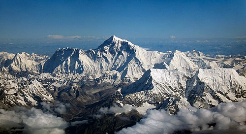

Mount Everest(known locally as Sagarmāthā[a] in Nepal and Qomolangma[b] in Tibet) is Earth's highest mountain above sea level. It lies in the Mahalangur Himal sub-range of the Himalayas and marks part of the China–Nepal border at its summit.[4] Its height was most recently measured in 2020 by Chinese and Nepali authorities as 8,848.86 m (29,031 ft 8+1⁄2 in).[5][6] Mount Everest attracts many climbers, including highly experienced mountaineers. There are two main climbing routes, one approaching the summit from the southeast in Nepal (known as the standard route) and the other from the north in Tibet. While not posing substantial technical climbing challenges on the standard route, Everest presents dangers such as altitude sickness, weather, and wind, as well as hazards from avalanches and the Khumbu Icefall. As of May 2024, 340 people have died on Everest. Over 200 bodies remain on the mountain and have not been removed due to the dangerous conditions
The Kinnaur Kailasha (locally known as Kinner Kailash) is a mountain in the Kinnaur district of the Indian state of Himachal Pradesh. As per Hindu scriptures, Lord Shiva and goddess Parvati reside in Kinner Kailash.[2] It is the fourth most important peak among the group of five separate peaks in Himalayas in separate locations collectively known as the Panch Kailash or "Five Kailashas", other being Mount Kailash in first place, Adi Kailash in second, Shikhar Kailash (Shrikhand Mahadev Kailash) in third, and Manimahesh Kailash in fifth place in terms of importance.[3] As a result, it is deeply revered by Hindus. Kinnaur Kailash peak has a height of 6050 meters and is considered sacred by both Hindu and Buddhist Kinnauris. This mountain is sometimes confused with the Mount Kailash in Tibet.

Gang Chua is a 6,288-metre (20,630-foot) summit in the Himalayas. The mountain is situated in the state of Himachal Pradesh, 145 kilometres (90 mi) east-northeast of the capital city of Shimla. Precipitation runoff from this mountain's slopes drains into tributaries of the Sutlej River. Topographic relief is significant as the south slope rises 2,300 metres (7,546 ft) above Tagla Khad (stream) in four kilometres (2.5 mi). The first ascent of Gang Chua was achieved on June 16, 1974, by Major F.J. Bahadur, Naik Omkar Chand, and M.A. Naik from the Indian Military Academy